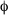
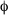

| Overview | Syntax and Semantics | Proof and Model Theory | Goedel | Applications |
Syntax
The syntax of Herbrand logic is exactly the same as for first-order logic.
Definition (Vocabulary): A vocabulary V consists of:
- A set of relation constants {r1, ..., rn}, each with an associated arity.
- A set of function constants {f1, ..., fm}, each with an associated arity.
- A non-empty set of object constants {c1, ..., ck}.
- A set of variables {x1,x2,...}.
For the sake of simplicity, we assume the set of constants in a vocabulary is finite. A countable set of constants changes the wording of certain theorems, but conceptually nothing changes.
Definition (Term): A term in V:
- A variable.
- An object constant.
- A function constant with arity n applied to n terms.
- Only expressions produced by the above rules are terms.
Definition (Sentence): A sentence in V:
- A relation constant with arity n applied to n terms.
  where is a sentence.
 where is a sentence.
-

 , where and are sentences.
, where and are sentences.
- , where and are sentences.
-
 , where and are sentences.
, where and are sentences.
-
 , where and are sentences.
, where and are sentences.
-
 , where and are sentences.
, where and are sentences.
 x., where is a sentence.
x., where is a sentence.
 x., where is a sentence.
x., where is a sentence.
- Only expressions produced by the above rules are sentences.
An atom is a sentence of the form p(t1,...,tn). A literal is either an atom or the negation of an atom. A ground sentence has no variables or quantifiers. A closed sentence has no free variables, whereas an open sentence does have free variables. We treat free variables in an open sentence as being implicitly universally quantified.
Semantics
Herbrand logic differs from first-order logic solely in the structures it considers to be models. The semantics of a given set of sentences is defined to be the set of Herbrand models that satisfy it, for a given vocabulary.
Definition (Herbrand Model): A Herbrand model for vocabulary V is any set of ground atoms in V.
Definition (Herbrand Satisfaction): Let be a closed sentence and M a Herbrand model in the vocabulary V.
 M p(t1,...,tn) if and only if p(t1,...,tn)
M p(t1,...,tn) if and only if p(t1,...,tn)  M.
M.
- M if and only if
 M .
M .
- M if and only if M and M .
- M if and only if M or M .
- M if and only if M or M .
- M if and only if M .
- M if and only if either M or M .
- M x.(x) if and only if M (t) for all ground terms t in V.
- M x.(x) if and only if M (t) for some ground term t in V.
We always assume that satisfaction for a set of sentences  is defined with respect to a vocabulary that includes all the constants and variables that appear in . Otherwise, a model might satisfy neither a sentence nor its negation.
is defined with respect to a vocabulary that includes all the constants and variables that appear in . Otherwise, a model might satisfy neither a sentence nor its negation.
Definition (Herbrand Entailment): Let be a set of closed sentences and V a vocabulary that is a superset of the vocabulary of . Let be a closed sentence. entails with respect to vocabulary V if and only if every Herbrand model for V that satisfies also satisfies .
wrt V if and only if M M , where M is a model for VExamples
The following sentence has two satisfying Herbrand models for the vocabulary {p, a, b}.
- p(a)
Models: {p(a)}, {p(a), p(b)}
For the vocabulary {p, a}, there is only one satisfying model: {p(a)}.
The following sentences are unsatisfiable for the vocabulary {p, a}.
- p(a)
x. p(x)The dependence of satisfaction on a vocabulary is a little unusual. To see why satisfaction is defined as it is, suppose instead of fixing the vocabulary up front (which defines the class of candidate models), we instead define satisfaction so that the vocabulary is gleamed from the sentences we are given. Now consider the following axioms.
- p(a)
p(b)x. p(x) p(b)} for vocabulary {p, a, b}. But, if we were to drop out the p(b) sentence, under the new definition of satisfaction, the vocabulary would be {p, a}, which as commented above is unsatisfiable. That is, under this new definition of satisfaction, a set of sentences could be satisfiable, but a subset of those sentences could be unsatisfiable. Clearly, that would cause havoc in proof procedures; by fixing the vocabulary up front, in this case to {p, a, b}, the satisfiability of a set of sentences ensures the satisfiability of every subset.